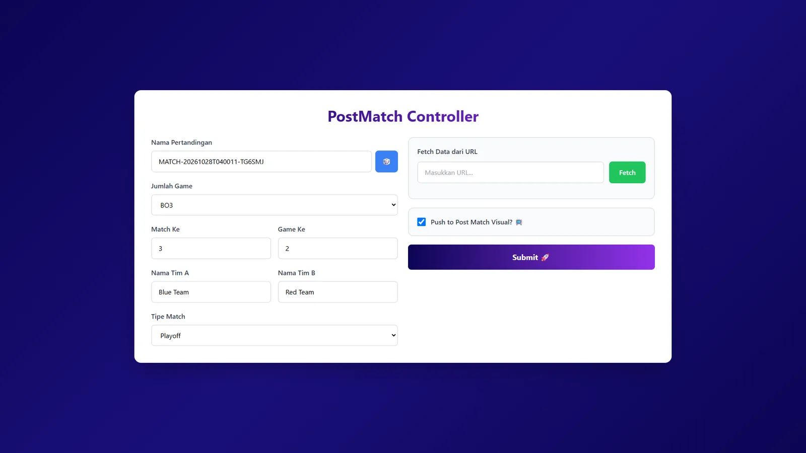
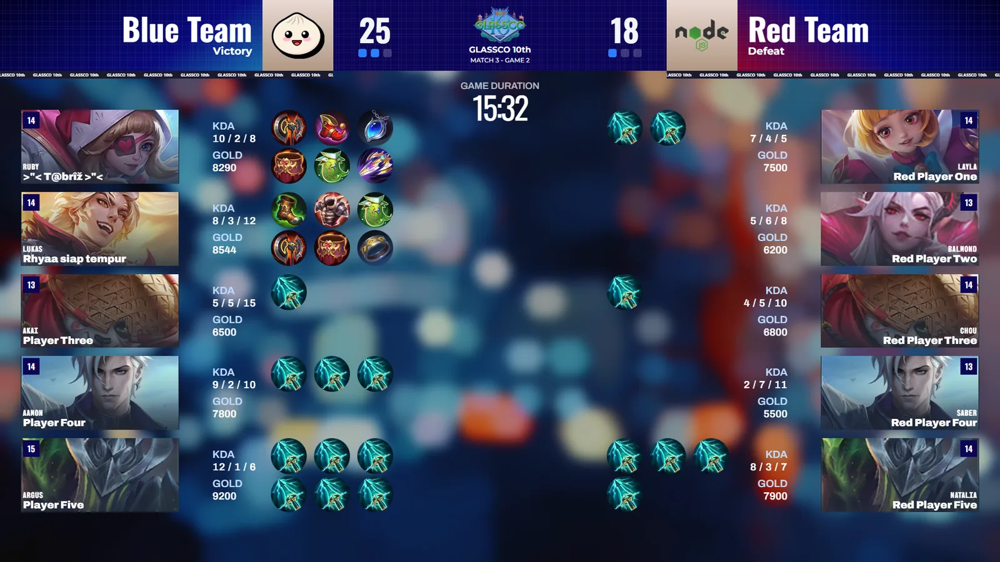

Glassco10 Tournament Overlay
WebSocket overlay prototype for a live Mobile Legends tournament
Context
Glassco10 is the inter-class tournament at SMAN 3 Jombang. I ran the esports division as an alumni committee member and started building overlays so the main-stage Videotron could show match information and post-game statistics.
What I built
- A Bun + Elysia server with a WebSocket endpoint that keeps per-match channels in memory and broadcasts updates to every overlay page subscribed to that match.
- An animated post-game statistics screen showing KDA, gold, duration, and item builds for both teams, using hero and item data sets.
- An operator form for match details (match name, game number, teams, match type).
What I learned
All overlay work ended up on me because no one else on the committee could write basic HTML, CSS, or JavaScript yet. Next time I would train the team before the event so the work can be shared.
How the pieces connect
glassco10 / overlayBun + ElysiaServer with a WebSocket endpointWebSocketPer-match channels kept in memory; updates are broadcast to every overlay page subscribed to that match- Post-game screenKDA, gold, duration, and item builds for both teams; runs on sample data
- Operator formMatch details; the save endpoint is not wired up yet
- UnfinishedScoreboard and draft-pick overlays (stubs)
Summarised from the project description on this page; not a complete architecture.
Screenshots

